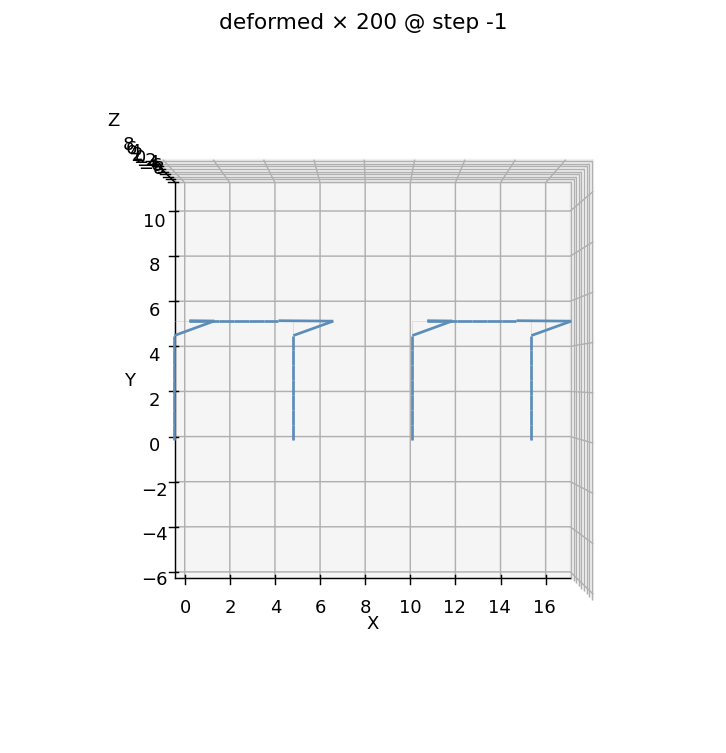

E9 — Compose modules¶
Up to now every model was built in a single session: open apeGmsh,
draw the geometry, mesh, solve. That's the right shape for one structure.
But real buildings repeat — the same bay, the same column, the same
prefabricated unit, stamped out many times. You don't want to re-draw and
re-mesh it on every copy. You want to build the piece once, save it,
and graft copies into a larger assembly.
That's compose. You save a meshed module to a model.h5, reload it as a
host, and g.compose(...) another copy of it into place — tag-offset and
namespaced, no re-meshing. In this example we build the
portal frame from E1 as a module, compose it into two
bays, push each bay with the same 60 kN lateral load, and check that
each bay drifts exactly the E1 amount, 8.39 mm — because compose leaves
the bays independent. That self-consistency is the whole proof: a composed
copy behaves identically to the standalone original.
The problem¶
bay 1 (host, bare PGs) bay 2 (composed, "bay2." prefix)
P ──►●═══════════● P ──►●═══════════●
║ ║ ║ ║
║ columns ║ beam ║ ║ H = 5 m
║ ║ ║ ║
██╨██ ██╨██ ██╨██ ██╨██
Fixed Fixed Fixed Fixed
└──── 5 m ────┘ ← 10 m gap → └──── 5 m ────┘
Module: the E1 portal — columns 0.22×0.22, beam 0.20×0.50, steel E = 200 GPa
Each bay: lateral P = 60 kN + gravity W = 300 kN at the roof joints
Bays are 10 m apart and NOT tied → mechanically independent
What we expect, stated up front:
Per-bay drift. Each bay is the E1 portal, loaded exactly as in E1. So each bay's roof should drift the same 8.39 mm E1 produced — and the two bays should agree with each other to round-off. If composing changed the physics, this is where it would show.
Per-bay base shear. Each bay's two column bases must between them react
that bay's 60 kN lateral load — −60 000 N, exactly. Two separate static
equilibrium checks, one per bay, both to the last digit.
Units
Consistent SI throughout — metres, newtons, pascals. Drift comes out in metres; we print millimetres.
The whole script¶
Read it once top to bottom, then we'll walk the three new moves: save a module, reload + compose, and address the composed copy by its prefixed name.
import tempfile, os
import numpy as np
from apeGmsh import apeGmsh, FEMData, Results
from apeGmsh.opensees import apeSees, OpenSeesModel
from apeGmsh.results.capture.spec import DomainCaptureSpec
# --- Problem data (consistent SI: m, N, Pa) — the E1 portal ---
H, B, E = 5.0, 5.0, 200e9
bc, hc = 0.22, 0.22; Ac = bc * hc; Ic = bc * hc**3 / 12.0 # columns
bb, hb = 0.20, 0.50; Ab = bb * hb; Ib = bb * hb**3 / 12.0 # beam
P, W = 60_000.0, 300_000.0 # lateral + gravity
work = tempfile.mkdtemp()
module = os.path.join(work, "portal_module.h5") # the saved part
assembly = os.path.join(work, "two_bay.h5") # the composed model
run_h5 = os.path.join(work, "run.h5") # the solved results
# --- 1. Build the portal MODULE once and SAVE it (save_to=) ---
with apeGmsh(model_name="portal_module", save_to=module) as g:
bl = g.model.geometry.add_point(0.0, 0.0, 0.0)
br = g.model.geometry.add_point(B, 0.0, 0.0)
tl = g.model.geometry.add_point(0.0, H, 0.0)
tr = g.model.geometry.add_point(B, H, 0.0)
col_l = g.model.geometry.add_line(bl, tl)
col_r = g.model.geometry.add_line(br, tr)
beam = g.model.geometry.add_line(tl, tr)
g.model.sync()
g.physical.add(1, [col_l, col_r], name="Columns")
g.physical.add(1, [beam], name="Beam")
g.physical.add(0, [bl, br], name="Base")
g.physical.add(0, [tl], name="RoofL")
g.physical.add(0, [tr], name="RoofR")
g.mesh.sizing.set_global_size(H / 6.0)
g.mesh.generation.generate(1)
# model.h5 is autosaved on exit — the module is now a reusable file.
# --- 2. Reload the module as a HOST and COMPOSE a second bay 10 m away ---
g = apeGmsh.from_h5(module) # chain phase: no gmsh
g.compose(module, label="bay2", translate=(10.0, 0.0, 0.0))
g.save(assembly)
# Chain-phase sessions have no live gmsh, so read the composed snapshot
# back from the file we just wrote:
fem = FEMData.from_h5(assembly)
# --- 3. Build the two-bay OpenSees model through the typed bridge ---
ops = apeSees(fem)
ops.model(ndm=2, ndf=3)
transf = ops.geomTransf.Linear(vecxz=(0.0, 0.0, 1.0))
# Host bay keeps BARE names; the composed bay is prefixed "bay2."
ops.element.elasticBeamColumn(pg="Columns", transf=transf, A=Ac, E=E, Iz=Ic)
ops.element.elasticBeamColumn(pg="Beam", transf=transf, A=Ab, E=E, Iz=Ib)
ops.element.elasticBeamColumn(pg="bay2.Columns", transf=transf, A=Ac, E=E, Iz=Ic)
ops.element.elasticBeamColumn(pg="bay2.Beam", transf=transf, A=Ab, E=E, Iz=Ib)
ops.fix(pg="Base", dofs=(1, 1, 1))
ops.fix(pg="bay2.Base", dofs=(1, 1, 1))
ts = ops.timeSeries.Linear()
with ops.pattern.Plain(series=ts) as pat:
pat.load(pg="RoofL", forces=(P / 2.0, -W / 2.0, 0.0)) # bay 1
pat.load(pg="RoofR", forces=(P / 2.0, -W / 2.0, 0.0))
pat.load(pg="bay2.RoofL", forces=(P / 2.0, -W / 2.0, 0.0)) # bay 2
pat.load(pg="bay2.RoofR", forces=(P / 2.0, -W / 2.0, 0.0))
ops.constraints.Plain()
ops.numberer.Plain()
ops.system.BandGeneral()
ops.test.NormDispIncr(tol=1e-10, max_iter=10)
ops.algorithm.Linear()
ops.integrator.LoadControl(dlam=1.0)
ops.analysis.Static()
# --- 4. Solve, capturing each bay's roof drift AND base reactions ---
spec = DomainCaptureSpec(opensees=ops)
for pg in ("RoofL", "RoofR", "bay2.RoofL", "bay2.RoofR"):
spec.nodes(pg=pg, components=["displacement"])
spec.nodes(pg="Base", components=["reaction_force"])
spec.nodes(pg="bay2.Base", components=["reaction_force"])
with ops.domain_capture(spec, path=run_h5) as cap:
cap.begin_stage("lateral", kind="static")
ops.analyze(steps=1)
cap.step(t=1.0)
cap.end_stage()
# --- 5. Read each bay's drift back, by name ---
om = OpenSeesModel.from_h5(run_h5, fem_root="/model")
results = Results.from_native(run_h5, model=om)
def drift(prefix):
l = results.nodes.get(pg=f"{prefix}RoofL", component="displacement_x")
r = results.nodes.get(pg=f"{prefix}RoofR", component="displacement_x")
return 0.5 * (float(l.values[-1, 0]) + float(r.values[-1, 0]))
drift_bay1 = drift("") # host, bare names
drift_bay2 = drift("bay2.") # composed copy, prefixed names
bx1 = results.nodes.get(pg="Base", component="reaction_force_x")
bx2 = results.nodes.get(pg="bay2.Base", component="reaction_force_x")
print(f"bay 1 drift = {drift_bay1*1e3:.4f} mm")
print(f"bay 2 drift = {drift_bay2*1e3:.4f} mm")
print(f"E1 standalone = 8.3883 mm")
print(f"bay1 vs bay2 = {abs(drift_bay1-drift_bay2)*1e3:.2e} mm")
print(f"bay 1 base shear = {float(bx1.values[-1, :].sum()):.1f} N")
print(f"bay 2 base shear = {float(bx2.values[-1, :].sum()):.1f} N")
Run it. You should see:
bay 1 drift = 8.3883 mm
bay 2 drift = 8.3883 mm
E1 standalone = 8.3883 mm
bay1 vs bay2 = 1.07e-11 mm
bay 1 base shear = -60000.0 N
bay 2 base shear = -60000.0 N
Both bays drift 8.3883 mm — the exact E1 number — and agree with each
other to 1e-11 mm. Each base shear is −60 000 N to the last digit. The
composed copy is mechanically indistinguishable from the standalone
portal. That's compose doing its job: it relocates and renames a module
without perturbing a single stiffness term.
Step 1 — Save a module with save_to=¶
with apeGmsh(model_name="portal_module", save_to=module) as g:
...
g.mesh.generation.generate(1)
# autosaved to module on context-manager exit
The only thing that makes this session different from E1 is save_to=.
Pass it a path and the meshed model — geometry, physical groups, nodes,
elements, the lot — is written to a native model.h5 when the with block
exits. (You can also call g.save("path.h5") explicitly mid-session.) That
file is the module: a self-contained, reusable part you can compose any
number of times, in this script or a different one next week.
A module is just a normal model that you happened to save. Nothing special
is declared. Every PG name you'll want to address later — "Columns",
"Base", "RoofL" — gets named here, exactly as in E1.
Step 2 — Reload as host, then compose¶
g = apeGmsh.from_h5(module) # the HOST
g.compose(module, label="bay2", translate=(10.0, 0.0, 0.0))
g.save(assembly)
fem = FEMData.from_h5(assembly)
Two new calls, and one gotcha.
apeGmsh.from_h5(module) reloads the saved module as a live session —
but in chain phase: the FEM comes straight off disk, and there is no
gmsh kernel behind it. That's fine here (we're assembling, not drawing),
but it means geometry/meshing calls would raise. The reloaded model is the
host, and the host keeps its physical-group names bare.
g.compose(module, label="bay2", translate=(10, 0, 0)) grafts a second
copy of the module into the same session, shifted 10 m in +x. The label=
is required: it's the namespace prefix for the composed copy. Every
physical group the module carried comes in renamed "{label}.{pg}" — so the
second bay's columns become "bay2.Columns", its base "bay2.Base", and so
on. The host's groups stay bare. (translate= rigidly shifts the copy's
node coordinates; there's also rotate= and an anchor= sugar that resolves
a PG to a translate.)
The gotcha: because a from_h5 session has no live gmsh,
g.mesh.queries.get_fem_data(...) can't run. So we g.save(assembly) the
composed result and read the snapshot back with FEMData.from_h5. (In a
single-session model you'd just call get_fem_data directly — this two-step
is specific to chain-phase compose.)
If you want to see what's inside a module before composing it,
g.compose_inspect(module)["pg_inventory"] returns its physical-group names
without merging anything.
Compose does not weld coincident nodes
Compose is a graft, not a merge. If two modules happen to share a
coordinate at an interface, compose leaves them as two separate
nodes — the modules stay mechanically independent unless you explicitly
tie them. In this example that independence is exactly what we want
(the bays are 10 m apart and uncoupled). To actually connect adjacent
modules — share a column line, bolt a bay to its neighbour — you declare
an interface constraint after composing, e.g.
g.constraints.tied_contact(master_label="face", slave_label="bay2.face").
That's a separate move; plain compose never couples anything.
Step 3 — Address each copy by its namespaced name¶
ops.element.elasticBeamColumn(pg="Columns", ...) # host — bare
ops.element.elasticBeamColumn(pg="bay2.Columns", ...) # composed — prefixed
ops.fix(pg="Base", dofs=(1, 1, 1))
ops.fix(pg="bay2.Base", dofs=(1, 1, 1))
This is the payoff of the namespacing. The host bay and the composed bay are
the same module, so they'd have name-collided if compose hadn't renamed
one. Because the copy is prefixed, every selector stays unambiguous: pg=
"Columns" is bay 1's columns, pg="bay2.Columns" is bay 2's. You declare
each bay's elements, fixities, and loads with the same names you'd use for
a standalone portal, just with the "bay2." prefix on the copy.
The loads are declared once each — bay 1 at RoofL/RoofR, bay 2 at
bay2.RoofL/bay2.RoofR. (Remember the bridge auto-emits MP constraints,
while g.loads cases are opt-in — import each into a Plain pattern with
p.from_model("<case>"); masses and fixities are re-declared explicitly
here.)
Step 4 — Read each bay back, by name¶
def drift(prefix):
l = results.nodes.get(pg=f"{prefix}RoofL", component="displacement_x")
r = results.nodes.get(pg=f"{prefix}RoofR", component="displacement_x")
return 0.5 * (float(l.values[-1, 0]) + float(r.values[-1, 0]))
drift_bay1 = drift("") # bare host names
drift_bay2 = drift("bay2.") # prefixed composed names
The read side is the same results.nodes.get(pg=..., component=...) you've
used since E1 — Results.from_native(..., model=...) with model=
required, reading the model out of the same Composed file. The only
difference is which name you ask for: bare for the host, "bay2."-prefixed
for the composed copy. One helper, two prefixes, two bays.
See it¶
The deformed shape makes the independence obvious. We render it headless (matplotlib, no GPU) and look straight down the out-of-plane axis:
ax = results.plot.deformed(step=-1, scale=200)
ax.view_init(elev=90, azim=-90) # look down +z -> 2-D elevation
ax.figure.savefig("compose-two-bay.png", dpi=130, bbox_inches="tight")

Two portals, 10 m apart, each leaning right by the same amount — the E1 sway mode, stamped twice. Nothing crosses the gap: the bays deform as if the other weren't there, which is precisely why each drift lands on 8.39 mm.
For an interactive 3-D view in a notebook, reach for
results.show_web() — the kernel-safe web viewer. (Never call
results.viewer() in a notebook; its blocking VTK+Qt loop crashes the
kernel.) The composed viewer can even colour by source module
(set_mode('Module')) so each bay gets its own hue.
What you just learned¶
- Build once, save, reuse.
save_to=(org.save(path)) writes a meshed model to a nativemodel.h5. That file is a reusable module. apeGmsh.from_h5+g.compose. Reload a module as a host (chain phase — no gmsh), theng.compose(module, label=..., translate=...)grafts copies into place, tag-offset and renamed. No re-meshing.- Composed PGs are label-prefixed. The host keeps bare names
(
"Columns"); each composed copy is"{label}.{pg}"("bay2.Columns"). Address every part by that name from there on. - Compose grafts, it doesn't weld. Coincident cross-module nodes stay
separate — modules are independent until you add an interface constraint
(
tied_contact/embedded/equal_dof). - Chain-phase read-back. A
from_h5session has no live gmsh, sog.save(...)thenFEMData.from_h5(...)to get the composed snapshot. - Proof, not promise. Each composed bay drifts the exact E1 8.3883 mm and reacts its full 60 kN base shear — a composed copy is mechanically identical to the standalone original, to round-off.
Where next¶
- Portal frame — the E1 module this page stamps twice, if you want the walkthrough behind the 8.39 mm.
- Multi-part assembly — the in-session way to
reuse a member: build a column as a
Partand stamp it withg.parts.add(one gmsh kernel), versus compose's cross-sessionmodel.h5grafting. - Tie non-matching meshes — when modules should connect: the interface constraint that compose deliberately leaves to you.
Next: E10 — Pushover of a steel moment frame (fiber sections).